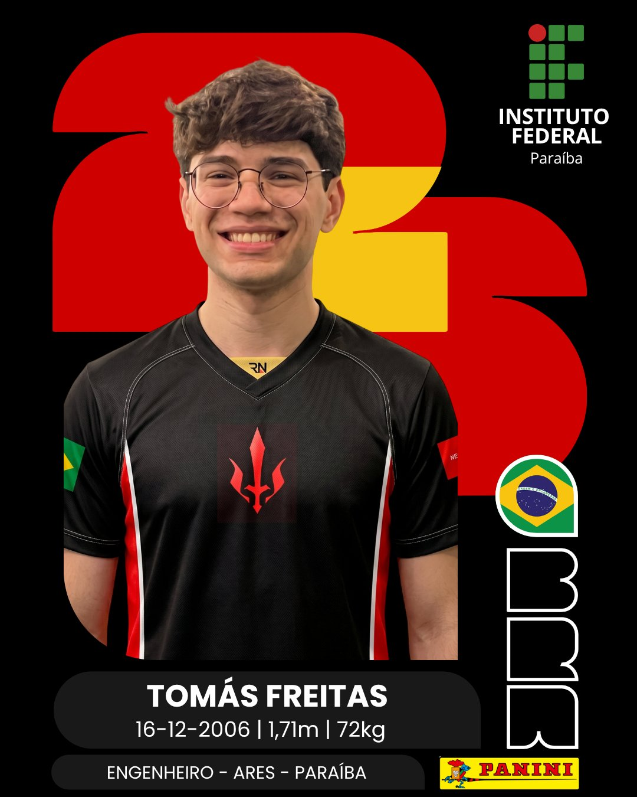
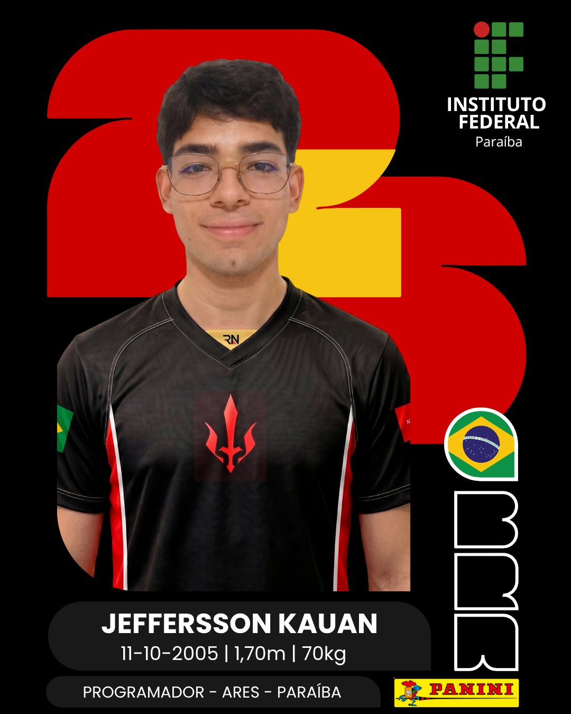

Os guerreiros por trás da armadura
NOSSA EQUIPE
Estudantes do interior do Nordeste que chegaram ao cenário mundial através de tecnologia, persistência e trabalho em equipe.
Seleção Escalada 2025
INTEGRANTES

TOMÁS FREITAS
Capitão · Engenheiro
FERNANDO OTTO
Ex-Capitão · Programador

JEFFERSSON KAUAN
Programador